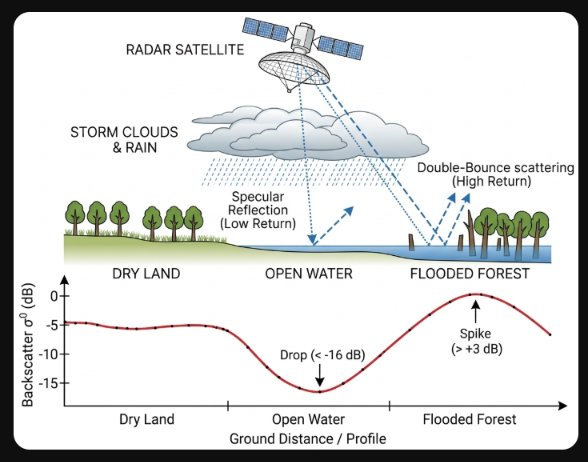
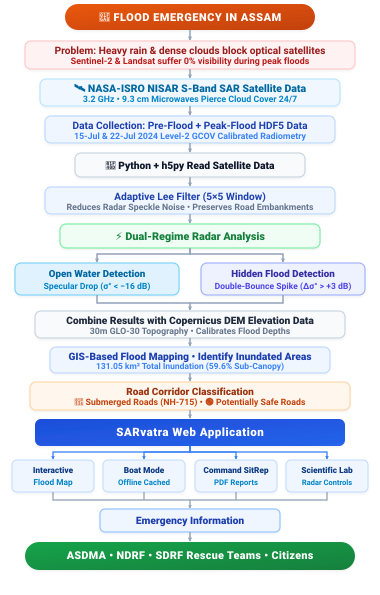

“When monsoon clouds blind optical satellites, we map surface and sub-canopy floods in 12.84 seconds. Not approximately. Physics-exact.”

| Core Architecture & Hydrology | Radar Physics & Data Science | GIS Engineering & Field UX |
|---|---|---|
| Gopal Kumar — Lead System Architecture & S-Band Pipeline | Shiva — Radar Backscatter Calibration & Physics | Dhruv — Edge & Offline GIS IndexedDB Systems |
| Simran — Geospatial Data Engineering & Hydrology | Prince Kumar — Open Data Ingestion & Ground Validation | Shubneet Kaur — ASDMA SitRep & Emergency Alert Design |
h5py + CWC gauges (96.85 m).
NISAR_S2_PR_GCOV_025_112_A_016 •
Peak-Flood: NISAR_S2_UR_GCOV_026_040_A_015
| Metric | Result (Sivasagar Testbed) |
|---|---|
| Sensor & Ground Posting | NISAR S-Band SAR (3.2 GHz • 9.3 cm λ • 12 m Reflector) at 10 m posting |
| Total Swath Footprint Analyzed | 3,425.06 km² across Sivasagar & Brahmaputra floodplain |
| Open Floodwater Detected | 86.03 km² isolated via specular backscatter drop (σ° < −16.0 dB) |
| Sub-Canopy Flooded Vegetation | 131.05 km² uncovered via double-bounce surge (Δσ° > +3.0 dB) |
| Agricultural Crop Exposure | 5,591 hectares mapped for rapid district relief allocation |
| Evacuation Routing Corridor | MDR-44 cut-off (0.65m submerged) → Elevated NH-715 Bypass (0% Flood Risk) |
| Processing Speed & Edge Delivery | 12.84 s full pipeline analysis | < 100 ms offline IndexedDB Boat Mode |